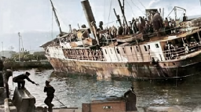
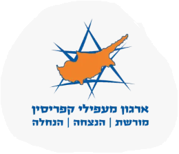

Aliyah Bet ships on their historic journey to the homeland


Interactive coastal memorial station model designed for installation
Dear Descendants and Families of the Ma'apilim,
Over 110,000 brave immigrants – our parents and grandparents – embarked on 142 clandestine ships from Europe and North Africa. They defied harsh blockades, braved treacherous seas, and endured detention in Cyprus before building the State of Israel.
🌊 National Initiative: 30 interactive memorial stations are being established along Israel's coastline to permanently honor every single clandestine vessel!
A heartfelt thank you to everyone who has contributed! With your support, we are making great progress, but our journey is not over. We need your participation to complete this national initiative and ensure their heroism is commemorated forever.
National Heritage Overview: Clandestine Immigration (Aliyah Bet)
| Total Immigrant Ships | 142 vessels sailing from European and North African ports (1934–1948) |
|---|---|
| Number of Ma'apilim | Over 110,000 courageous men, women, and children seeking safe haven |
| Cyprus Deportations | Approximately 52,000 refugees detained in British camps in Cyprus |
| Memorial Project | 30 interactive educational trail stations along Israel's Sea Trail |